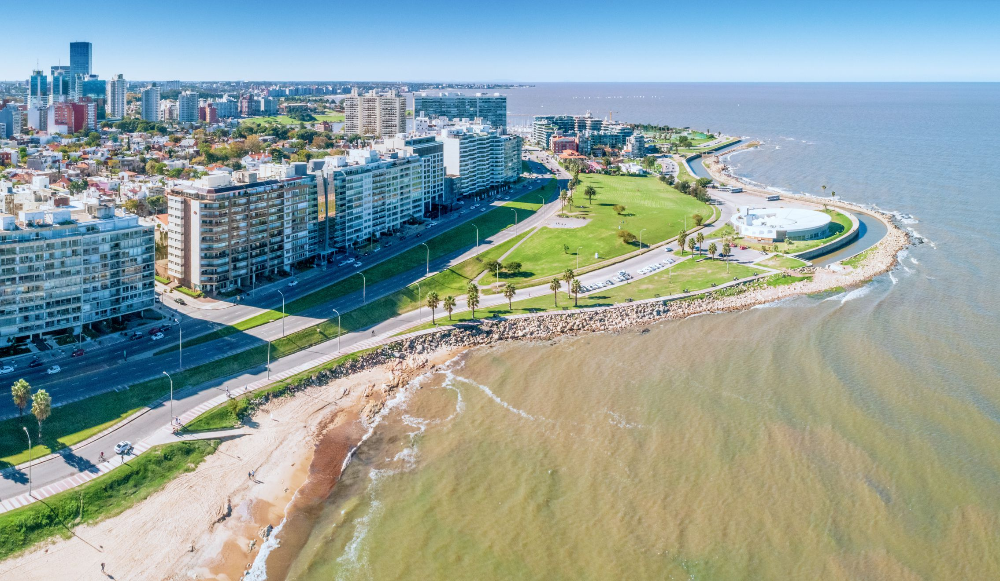

MARRZ,

Bienvenidos a MARRZ, una organización encargada de desarrollar proyectos de software de alta calidad
La unión de este equipo se da por la necesidad de realización de un proyecto llamado "FeelUy", del cual explicaremos su propósito a continuación.
FeelUy
FeelUy nace de una necesidad a la hora de emprender un viaje, solo, con familia o amigos, por nuestro hermoso Uruguay.
Tenemos diversos puntos de tu posible interés

FeelUy agrupa en una sola aplicación web, toda la información necesaria para que puedas organizar y gestionar tu tour por Uruguay.
En principio, está enfocado en Montevideo, pero continuamos trabajando día a día para expandirnos al resto del territorio uruguayo, y quien sabe, tal vez un día, al resto del mundo.

Accede al sitio web de FeelUy